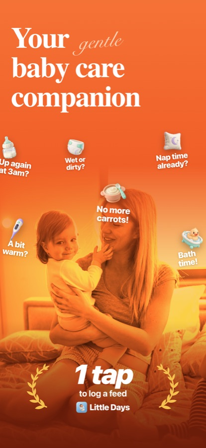
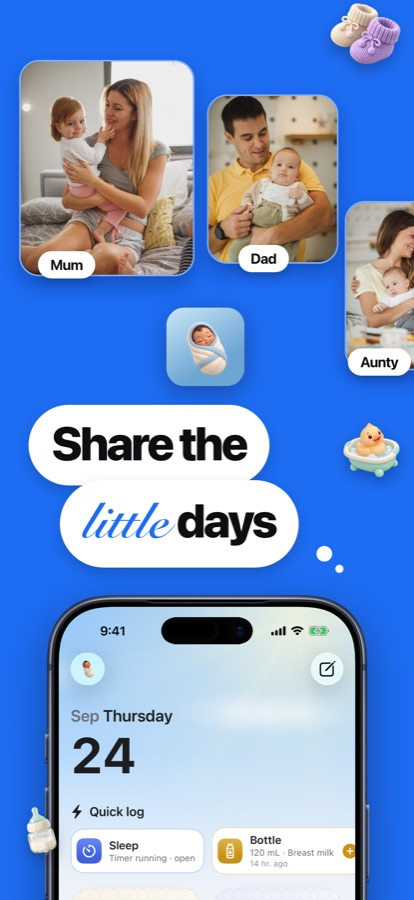
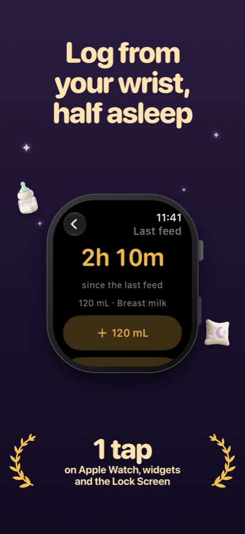
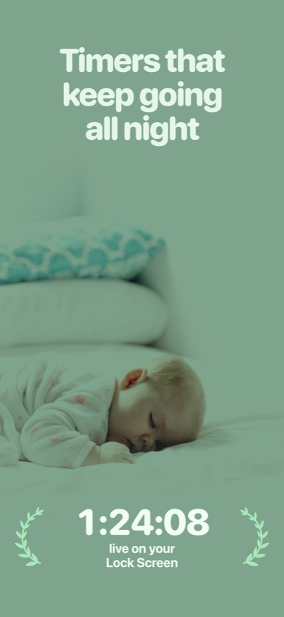
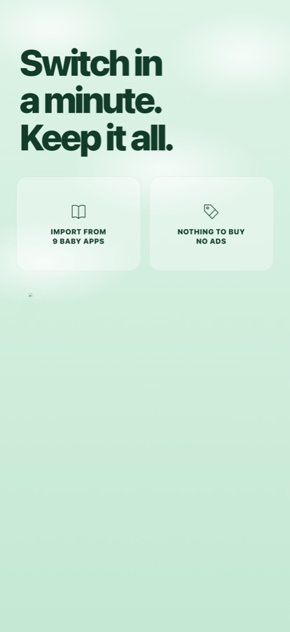

Baby tracker for iPhone, iPad and Apple Watch
The free baby tracker for the whole family
Log feeds, sleep and diapers in one tap, day or 3am. Share with everyone who helps. No subscription, no ads, no account.
Download on the App Store




Everything you need, nothing to unlock
Switching from another app?
Bring your history with you. Little Days imports exports from Huckleberry, Glow Baby, Hatch Baby, Baby Tracker, Nara Baby, Baby Connect, Baby Daybook, PiyoLog and Baby Buddy, and shows you a preview before anything is saved. Step-by-step guide for Nara Baby.
Your data stays yours
Records live on your devices and in your own iCloud. There are no Little Days servers or accounts, and the app collects no data. Privacy policy.
Support
Contact
Send us a message (a free GitHub account is needed). We usually reply within two working days. Please don’t include your baby’s records or other personal details, as messages there are public.
Frequently asked questions
How do I share with my partner or family?
Open Settings › Family & caregivers and choose Invite with a link or code. Everyone needs to be signed in to iCloud.
My records are not syncing.
Check that you are signed in to iCloud on each device and have an internet connection. Changes usually appear within a minute.
Can I bring my history from another app?
Step-by-step: moving from Nara Baby
Yes. Choose Import from another app during setup, or Settings › Import and export. Little Days reads exports from Huckleberry, Glow Baby, Hatch Baby, Baby Tracker, Nara Baby, Baby Connect, Baby Daybook, PiyoLog and Baby Buddy.
How do I export my records?
Settings › Import and export lets you create a PDF or CSV to share with your pediatrician or keep as a backup.
Is Little Days really free?
Yes. Every feature is free, with no subscription or ads.
Little Days is a logging tool and does not provide medical advice. If anything seems unusual, contact your doctor or care team.